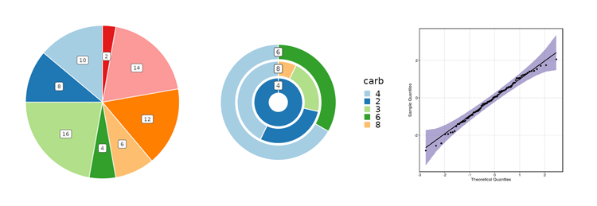

plotthis is an R package that is built upon ggplot2 and other plotting packages. It provides high-level APIs and a wide range of options to create stunning, publication-quality plots effortlessly.
Installation
install.packages("plotthis")
# or to install the latest version:
remotes::install_github("pwwang/plotthis")
devtools::install_github("pwwang/plotthis")You can also install the package using conda:
$ conda install pwwang::r-plotthisCredits
plotthis is greatly inspired by the SCP package, but with the plotting functions detached from the Seurat object or single-cell data analysis. It is designed to be more flexible and general-purpose, and can be used for a wide range of data types and analysis scenarios.
Gallery
AreaPlot / TrendPlot / ROCCurve

ClustreePlot / LinePlot / Network




ChordPlot / UpsetPlot / VennDiagram
DensityPlot / Histogram / RidgePlot

DotPlot / ScatterPlot / LollipopPlot